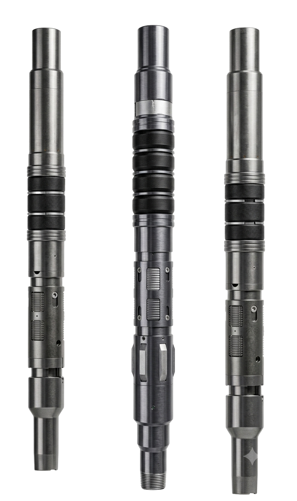

Red internacional de capacidades y soluciones especializadas en tecnologías de terminación de pozos (Cased Hole Completions), respaldada por más de 60,000 accesorios instalados y presencia consolidada en América.
La integración de capacidades técnicas y tecnología especializada permite ofrecer soluciones para completamiento de pozos mediante accesorios de terminación desarrollados para desempeñarse en entornos operativos de alta exigencia y presiones de hasta 10,000 psi.